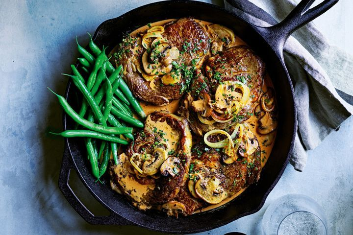
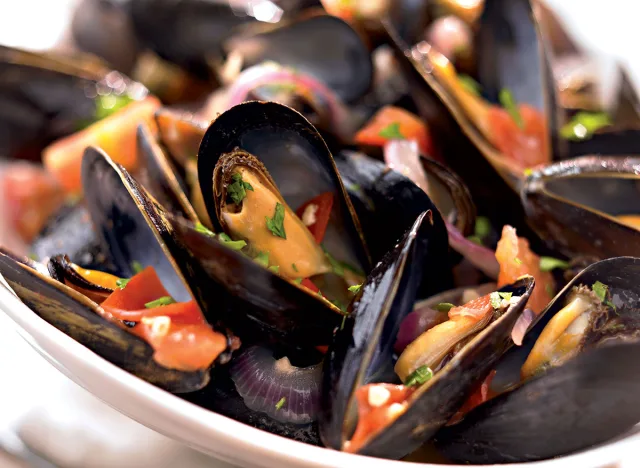

Stek strogonof na patelni
Mięso z patelni to jedno z podstawowych części obiadu ale niewiele osób potrafi wykorzystać soki mięsne i aromaty wydobywające się podczas smażenia,
które tworzą idelna baze do sosu.

Autor - Coles Magazine
Crossaint
Crossainty oraz inne rogale są zadziwająco przydatne w codziennej kuchni oraz wyglądają nieziemsko przy dobrym wykonaniu.
Autor - Amy Beh
Mule na winie
Mule wrzuca się razem z drogimi daniami z restauracji, jednakżke ich przygotowanie nie jest skomplikowane, a w polsce są bardzo egzotyczne przez brak popularności.

Autor - David Zinczenko i Matt Goulding
Sushi
Sushi rolkowane jest jedzeniem bardzo estetycznym ale i odziwo prostym i łatwym do modyfikowania. Wystarczy dobrze przygotować ryż, a reszta to będzie sama przyjemność.
Autor - Japan Centre